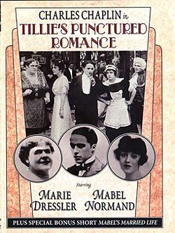

Tillie's Punctured Romance
Chaplin conoce a Tillie (representada por Marie Dressler) en el campo y después de ver al padre de Tillie sacando un gran rollo de billetes para sus empleados, la convence de escaparse con él a la ciudad. Allí Charlot, de común acuerdo con su antigua novia (Mabel Normand), emborracha a Tillie, le sacan el dinero y escapan, mientras Tillie termina en la cárcel. Más adelante, Charlot lee que Tillie ha heredado tres millones de dólares de un tío. Charlot deja a su novia y consigue que Tillie lo acepte y se casen. Mientras dan una gran fiesta en la mansión del tío, Tillie encuentra a su esposo con su antigua novia y comienza a dispararles. Es entonces cuando el tío, que en realidad no había muerto, regresa. Los tres huyen de la policía hasta el muelle y Tillie termina en el agua. Finalmente, las dos mujeres se dan cuenta de que son demasiado buenas para Charlot, lo dejan y quedan como amigas.
Desarrollo
Charlie Chaplin es alguien muy importante en la historia de el cine.
Conclusión
Charlie Chaplin es un muy importante en nuestra histora del cine ya que el fue productor, director, compositor, guionista y editor cinematográfico. Yo estudiando producción multimedia me encanta ver sus pelculas ya que son muy interesantes como hay esos puntos de giro en sus peliculas que nos llevan a apreciar lo que realmente es el cine, lo que es una buena producción y los guiones que hizo para cada una de ellas.